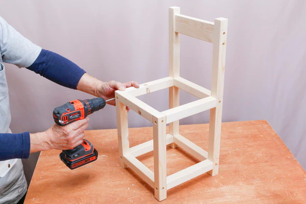

{% extends "base.html" %}

{% block content %}
    <div class="pictuer">
    
    </div>
    <h1>
        丸棒１本を１０㎜に４個カットします。
    </h1>
    
    <h1>
        ねじを使い、前脚２本と後脚２本にそれぞれ脚つなぎ（角材）と板を固定します。
    </h1>
    
    <h1>
        前脚と後脚をつなぐため、新しい角材４本を使ってねじで止めます。
        座面に使う板を左右に１０ｍｍ出るように並べてください
    </h1>
    <a href="{{ url_for('auth.process2') }}">
        <button>
            遷移
            <i class="arrow"></i>
        </button>
    </a>
{% endblock %}